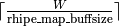
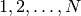
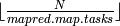

Packaging a Job for MapReduce
The function rhmr discussed below creates the R object that contains
all the information required by RHIPE to run a MapReduce job.
Within the MapReduce environment, RHIPE provides 3 functions to interact with
the Hadoop Framework. These are discussed in Functions to Communicate with Hadoop during MapReduce
Creating a MapReduce Object
rhmr - Creating the MapReduce Object
| rhmr(map,reduce=NULL, combiner=FALSE,
setup=NULL,cleanup=NULL,
ofolder='',ifolder='',orderby='bytes'
inout=c("text","text"),mapred=NULL,
shared=c(),jarfiles=c(),
partitioner=NULL,copyFiles=F,
N=NA,opts=rhoptions(),jobname="")
|
The rhmr takes the users map and reduce expressions, the input source and
output destination and the input/output formats. It returns an object that can
submitted to the Hadoop Framework via a call to rhex.
- map
- The map is an R expression (created using the R command expression) that is evaluated by
RHIPE during the map stage. For each task, RHIPE will call this expression
multiple times. If a task consists of W key,value pairs, the expression
map will be called  times. The default value of rhipe_map_buffsize is
10,000 and is user configurable. Each time map is called, the vectors
map.keys and map.values contain rhipe_map_buffsize keys and values respectively. If the objects are large it advisable to reduce the size of rhipe_map_buffsize . See the Airline examples where the value was set to 10 (each value was 5000x8 data frame).
- reduce
The general form the Reduce phase is best explained with this
pseudo code
| while more_keys_available() == TRUE
reduce_key <- get_new_key()
...
while more_values_for_key_available()==TRUE
value <- get_new_value_for_key()
...
end while
end while
|
Each Reduce task is a partition of the intermediate keys produced as the
output of the Map phase. The above code is run for every Reduce task. RHIPE
implements the above algorithm by calling the R expression reduce$pre
at line 3. In this expression, the user will have the new key present in
reduce.key. After which RHIPE will call reduce$reduce several times
until the condition in line 4 is false. Each time reduce\$reduce is
called, the vector reduce.values will contain a subset of the
intermediate map values associated with reduce.key. The length of this
vector is a default 10,000 but can be changed via the
rhipe_reduce_bufsize option. Finally when all values have been
processed, RHIPE calls reduce$post at line 7. At this stage, all
intermediate values have been sent and the user is expected to write out the
final results. Variables created in reduce$pre will be visible in the
subsequent expressions. Thus to compute the sum of all the intermediate
values,
| reduce <- expression(
pre = { s <- 0 },
reduce = { s <- sum(s,unlist(reduce.values)) },
post = { rhcollect(reduce.key,s) }
)
|
reduce is optional, and if not specified the map output keys will be sorted
and shuffled and saved to disk. Thus it is possible to set inout[2] to
map when the reduce expression is not given to obtain a MapFile. To turn of
sorting and shuffling and instead write the map output to disk directly, set
mapred.reduce.tasks to zero in mapred. In this case, the output keys are not sorted and the output format should not be map
- combine
- If set to TRUE, RHIPE will run the reduce expression on
the output of the map expression locally i.e. on the same computer that
is running the associated map. For every io.sort.mb megabytes of key,value
- .
output from the map, the keys are sorted, and the expression reduce
will be called for all keys and their associated values. The calling sequence
of the elements of reduce is the same as above. The only difference is
that the expression will not be sent all the values associated with the
key.
If combiner is TRUE, the local reduction will be in invoked.
The outputs from the reduce are sorted and shuffled and sent to the Hadoop
MapReduce reduce phase. Since the output from map is sent to reduce
and the output from reduce is also sent to the reduce (during the
final reduce phase of Hadoop MapReduce), the reduce expression must be
able to handle input from the map and from reduce.
If combiner is TRUE, the reduce expression will be invoked during
the local combine, in which case the output is intermediate and not saved as
final output. The reduce expression also be invoked during the final reduce phase, in which
case it will receive all the values associated with the key (note, these are
values outputted when reduce is invoked as a combiner) and the output will
be committed to the destination folder. To determine in which state reduce
is running read the environment variable rhipe_iscombining which is ‘1’ (also the R symbol rhipe_iscombining is equal TRUE)
or ‘0’ for the former and latter states respectively.
- shared
- This is a character vector of files located on the HDFS. At the
beginning of the MapReduce job, these files will be copied to the local hard
disks of the Tasktrackers (cluster computers on which the compute nodes/cores are located). User provided R code can read theses files from the
current directory (which is located on the local hard disk). For example, if
/path/to/file.Rdata is located on the HDFS and shared, it is possible to
read it in the R expressions as load('file.Rdata'). Note, there is no
need for the full path, the file is copied to the current directory of the R
process.
- setup and cleanup
- In RHIPE, each task is a sequence of many thousands of
key, value pairs. Before running the map and reduce expression
(and before any key, value pairs have been read),
RHIPE will evaluate expressions in setup and cleanup. Each of
these may contain the names map and reduce e.g
setup=list(map=,reduce=) specific to the map and reduce
expressions. If just an expressions is provided, it will be evaluated before
both the Map phase and Reduce phase. The same is true for
cleanup. Variables created, packages loaded in the setup expression
will be visible in the map and the reduce expression but not both since
both are evaluated in different R sessions. For an example, see Streaming Data?
- ifolder
- This is a path to a folder on the HDFS containing the input
data. This folder may contain sub folders in which case RHIPE use the all the
files in the subfolders as input. This argument is optional: if not provided,
the user must provide a value for N and set the first value of
inout to lapply.
- ofolder
- The destination of the output. If the destination already exists,
it will be overwritten. This is not needed if there is not output. See Downloading Airline Data
- orderby
- This is one of bytes, integer , numeric and character. The intermediate keys will be ordered assuming the
output key in the map is of that type. If not of the type an exception will be thrown. Tuples can be sorted too, see Tuple Sorting
- inout
A character vector of one or two components which specify the formats of
the input and output destinations. If inout is of length one this specifies the input format, the output being NULL (nothing is written)
Components can be:
- sequence
- The keys and values can be arbitrary R objects. All the
information of the object will be preserved. To extract a single key,value
pair from a sequence file, either the user has to read the entire file or
compose a MapReduce job to subset that key,value pair.
- text
- The keys, and values are stored as lines of text. If the input is
of text format, the keys will be byte offsets from beginning of the file and
the value is a line of text without the trailing newline. R objects written
to a text output format are written as one line. Characters are quoted and
vectors are separated by mapred.field.separator (default is
space). The character used to separate the key from the value is specified
in the mapred argument by setting mapred.textoutputformat.separator
(default is tab). To not output the key, set mapred.textoutputformat.usekey to FALSE.
- map
- A map file is actually a folder consisting of sequence file and an
index file. A small percentage of the keys in the sequence file are stored in
the index file. Using the index file, Hadoop can very quickly return a value
corresponding to a key (using rhgetkey). To create such an output
format, use map. Note, the keys have to be saved in sorted order. The
keys are sent to the reduce expression in sorted order, hence if the
user does not modify reduce.key a query-able map file will be created. If
reduce.key is modified, the sorted guarantee does not hold and RHIPE
will either throw an error or querying the output for a key might return with
empty results. MapFiles cannot be created if orderby is not bytes.
- copyFiles
- Will the files created in the R code e.g. PDF output, be copied
to the destination folder, ofolder?
- jobname
- The name of the job, which is visible on the Jobtracker
website. If not provided, Hadoop MapReduce uses the default name
job_date_time_number e.g. job_201007281701_0274
- jarfiles
- Optional JARs that need to be used during Hadoop MapReduce.
This is used in the case when a user provides a custom InputFormat. Specify the
JAR file to handle this InputFormat using this argument and specify the name of
the InputFormat in the mapred argument.
- opts
- RHIPE launches the C engine on the remote computers using the value
found in rhoptions()$opts$runner. This is created from the local R
installation which is possibly different from the Tasktrackers. If this is the
case, specify the command that launches the R session via this parameter.
- N
- To apply a computation to the numbers  set inout[1]
to lapply and specify the value of N in this parameter. Set the number
of map tasks in mapred.map.tasks (hence each task will run approximately
 computations sequentially).
- partitioner
- A list of two names elements: lims and type. A
partitioner forces all keys sharing the same property to be processed by one
reducer. Thus, for these keys, the output of the reduce phase will be saved in
one file. For example, if the keys were IP addresses e.g. c(A,B,C,D)
where the components are integers, with the default partitioner, the space of
keys will be uniformly distributed across the number of reduce tasks. If it is
desired to store all IP addresses with the same first three ordinates in one file (and processed by one R process), use a
partitioner as list(lims=c(1:3), type='integer'). RHIPE implements
partitioners when the key is an atomic vector of the following type: integer,
string, and real. The value of lims specifies the ordinates (beginning and end) of the key
to partition on. The numbers must be positive. lims can be a single number. See Streaming Data?.
- mapred
- Specify Hadoop and RHIPE options in this parameter (a list). For a full list of
RHIPE options see Options For RHIPE and for Hadoop options go here.
Functions to Communicate with Hadoop during MapReduce
rhcollect - Writing Data to Hadoop MapReduce
Called with two R objects. Sends a key,value pair to the Hadoop system. In the
Map phase, it will pass it on for reduction if mapred.reduce.tasks is
not zero (by default it is non zero) or it will be written to disk if
mapred.reduce.tasks is zero. In the Reduce phase, it will be sent for further
reduction if reduce is being run as a combiner or it will be written to
the final destination if it is being run as the reducer. Don’t forget to use this in the Map - if not called,nothing will be sent to the reducer.
rhcounter - Distributed Counters
rhcounter(group, name, value)
Increments (in a safe way i.e. no race conditions) the distributed counter
name that belongs to family group by value. Ideally group and
name should be strings, any R object can be sent and it will be converted to
its string representation (see String Representations)
rhstatus - Updating the Status of the Job during Runtime
Makes the string message visible on the Jobtracker
website. This also informs Hadoop that the task is still running and it is not
to be killed. In the absence of rhstatus and if
mapred.task.timeout is non zero (by default it is 10 minutes) Hadoop will
kill the R process.
rhsz,rhuz - Functions for Serialization
rhsz(object)
rhuz(rawobj)
The function rhsz serializes an object using RHIPE’s binary serialization
(see RHIPE Serialization). This will return the raw bytes
corresponding the serialized object. If the object cannot be serialized, it will be
converted to NULL and serialized. rhuz takes the bytes and un-serializes,
throwing an error if it cannot. These two functions are also available at the R
console. RHIPE uses the internals of these functions in rhcollect and
rhread. The maximum size of the serialized object that can be read is
256MB. Larger objects will be written successfully, but when read RHIPE
will throw an error. These functions are useful to get an approximate idea
of how large an object will be.